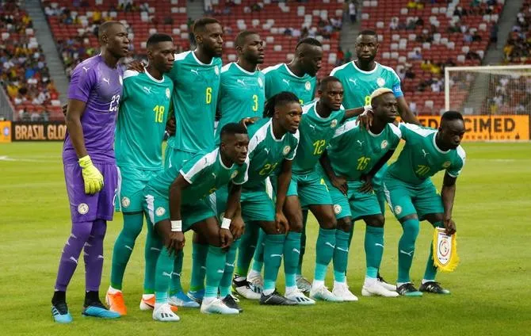

Seleção do Senegal
Seleção do Senegal nas Copas do Mundo
A Seleção do Senegal participou até hoje em 9 edições da Taça das Nações Africanas, a primeira das quais em 1965, tendo ficado no 4º lugar. Organizou o evento no ano de 1992 atingindo nesse ano as quartas-de-final.
Em 2002 atingiu a final tendo sido derrotada nos pênaltis pela Seleção Camaronesa de Futebol, e em 2019 perdeu a decisão para a Seleção Argelina de Futebol.
Em 2022, foi campeã do Campeonato Africano das Nações de 2021.
A primeira participação da Seleção do Senegal em Copas do Mundo ocorreu em 2002, tendo defrontado e vencido a então seleção campeã do mundo, a França no jogo inaugural da competição. Acabou em sétimo lugar após ser eliminada nas quartas-de-final pela Turquia.
Apesar de favorita a Seleção do Senegal não conseguiu o apuramento para o Mundial de 2006, tendo ficado atrás da Seleção do Togo. Nas Eliminatórias da Copa do Mundo de 2018, se classificou em 1º lugar no seu grupo, garantindo assim vaga para o segundo Mundial de sua história.

Retrospecto da seleção do Senegal em Copas do Mundo
1930 a 1962 - Não disputou
1966 - Desistiu
1970 - Não se classificou
1974 - Não se classificou
1978 - Não se classificou
1982 - Não se classificou
1986 - Não se classificou
1990 - Não se classificou
1994 - Não se classificou
1998 - Não se classificou
2002 - Eliminada nas quartas-de-final
2006 - Não se classificou
2010 - Não se classificou
2014 - Não se classificou
2018 - Eliminada na 1 fase
Técnico da Seleção de Senegal
Aliou Cissé
Goleiros
Edouard Mendy
Bingourou Kamara
Aliou Badara Faty
Zagueiros
Kalidou Koulibaly
Pape Abou Cissé
Abdoulaye Seck
Laterais
Abdou Diallo
Fodé Ballo-Touré
Saliou Ciss
Youssouf Sabaly
Bouna Sarr
Volantes
Pape Sarr
Idrissa Gueye
Pape Gueye
Nampalys Mendy
Cheikhou Kouyaté
Mamadou Loum
Meias
Moustapha Name - Meia Central
Pontas e Centroavantes
Sadio Mané - Ponta Esquerda
Mame Thiam - Ponta Esquerda
Ismaïla Sarr - Ponta Direita
Boulaye Dia- Centroavante
Habib Diallo - Centroavante
Bamba Dieng - Centroavante
Keita Baldé - Centroavante
Famara Diédhiou - Centroavante